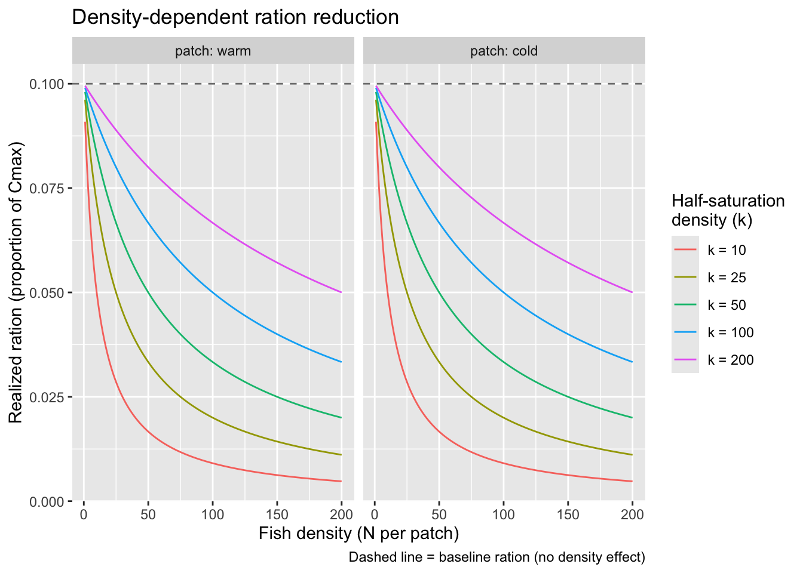
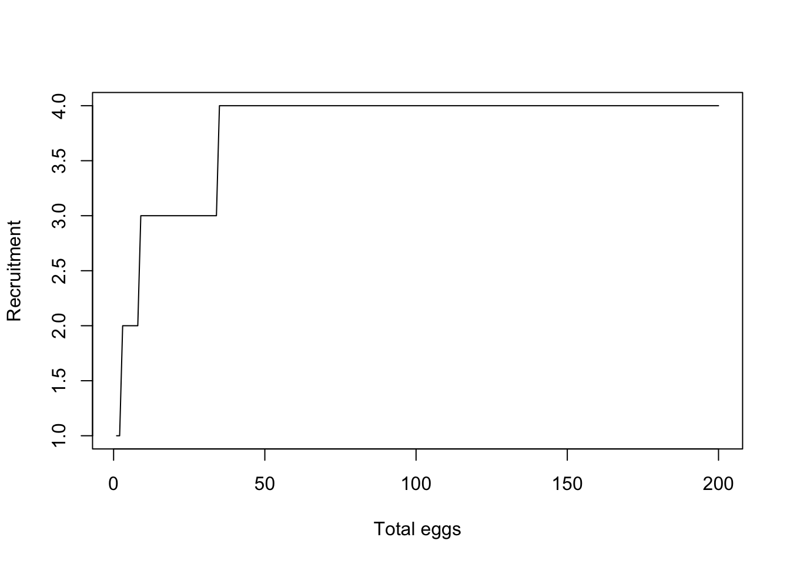

Code
# Rescale a vector to a specific
fncRescale <- function(x, to = c(0, 1), from = range(x, na.rm = TRUE, finite = TRUE)) {
(x - from[1]) / diff(from) * diff(to) + to[1]
}if any changes are made, need to re-run qmd_to_r_script() function at end, in console
Purpose: This script generates the functions called in the IBM simulation loop.
Source dependencies
Rescale a vector to a specific range…e.g., [0-1].
# Rescale a vector to a specific
fncRescale <- function(x, to = c(0, 1), from = range(x, na.rm = TRUE, finite = TRUE)) {
(x - from[1]) / diff(from) * diff(to) + to[1]
}Build bioenergetics model, equations from Hanson et al. (1997), and general approach from A. Fullerton (https://github.com/aimeefullerton/growth_regime_IBM). Currently using O. mykiss parameters because the full suite of respiration estimates does not exist for bull trout, and hence no effect of ration.
Get BioEnergetics Parameters
fncGetBioEParms <- function(spp, pred.en.dens, prey.en.dens, oxy, pff, wt.nearest,
startweights = rep(initial.mass, numFish), pvals = rep(0.5, numFish), ration = rep(0.1, numFish)){
N.sites <- nrow(wt.nearest) #here, sites are fish in each reach
N.steps <- 1 #one time step
Species <- spp
SimMethod <- 1 #method that predicts growth
Pred <- pred.en.dens #predator energy density
Oxygen <- oxy #oxygen consumed
PFF <- pff #percent indigestible prey
stab.factor <- 0.5 #stability factor for other simulation methods
epsilon <- 0.5 #also for other simulation methods
endweights <- startweights*5
TotalConsumption <- rep(100, N.sites)
pvalues <- t(matrix(round(pvals, 5)))
sitenames <- t(matrix(wt.nearest[,"pid"]))
temperature <- t(wt.nearest[,"WT"])
prey.energy.density <- t(matrix(rep(prey.en.dens, N.sites)))
ration <- t(matrix(round(ration, 5)))
return(list(
"Species" = Species,
"SimMethod" = SimMethod,
"Wstart" = startweights,
"Endweights" = endweights,
"TotalConsumption" = TotalConsumption,
"pp "= pvalues,
"Temps" = temperature,
"N.sites" = N.sites,
"N.steps" = N.steps,
"sitenames" = sitenames,
"Pred" = Pred,
"prey.energy.density" = prey.energy.density,
"Oxygen" = Oxygen,
"stab.factor" = stab.factor,
"PFF" = PFF,
"epsilon" = epsilon,
"ration" = ration)
)
}Constants, hard-coded for O. mykiss. Could alternatively do for bull trout (constants commented out) but we don’t have parameter estimates for respiration equations that would allow growth to vary by ration size.
# Constants, hard-coded - using RATION instead of p-values
fncReadConstants <- function() {
# Get consumption constants
# Cons <- data.frame(
# ConsEQ = 3,
# CA = 0.1317,
# CB = -0.1396,
# CQ = 3.0,
# CTO = 15.8,
# CTM = 17.5,
# CTL = 21.0,
# CK1 = 0.06,
# CK4 = 0.38)
#
# # Get respiration constants
# Resp <- data.frame(
# RespEQ = 1,
# RA = 0.0009,
# RB = -0.1266,
# RQ = 0.0833,
# RTO = 0,
# RTM = 0,
# RTL = 0,
# RK1 = 1,
# RK4 = 0,
# ACT = 1,
# BACT = 0,
# SDA = 0.172)
#
# # Get Excretion / Egestion Constants
# Excr <- data.frame(
# ExcrEQ = 2,
# FA = 0.212,
# FB = -0.222,
# FG = 0.631,
# UA = 0.0314,
# UB = 0.58,
# UG = -0.299)
Cons <- data.frame(
ConsEQ = 4,
CA = 0.628,
CB = -0.3,
CQ = 5,
CTO = 20,
CTM = 20,
CTL = 24,
CK1 = 0.33,
CK4 = 0.2)
# Get respiration constants
Resp <- data.frame(
RespEQ = 1,
RA = 0.00264,
RB = -0.217,
RQ = 0.06818,
RTO = 0.0234,
RTM = 0,
RTL = 25,
RK1 = 1,
RK4 = 0.13,
ACT = 9.7,
BACT = 0.0405,
SDA = 0.172)
# Get Excretion / Egestion Constants
Excr <- data.frame(
ExcrEQ = 4,
FA = 0.212,
FB = -0.222,
FG = 0.631,
UA = 0.0314,
UB = 0.58,
UG = -0.299)
# Return the Constants
return(list("Consumption" = Cons,
"Respiration" = Resp,
"Excretion" = Excr))
}Consumption, respiration, and excretion equations
# Consumption Equation 1
ConsumptionEQ1 <- function(W, TEMP, PP, PREY, CA, CB, CQ) {
CMAX <- CA * (W ** CB) #max specific feeding rate (g_prey/g_pred/d)
CONS <<- (CMAX * PP * exp(CQ * TEMP)) #specific consumption rate (g_prey/g_pred/d) - grams prey consumed per gram of predator mass per day
CONSj <<- CONS * PREY #specific consumption rate (J/g_pred/d) - Joules consumed for each gram of predator for each day
return(list("CMAX" = CMAX, "CONS" = CONS, "CONSj" = CONSj))
}
# Consumption Equation 2
ConsumptionEQ2 <- function(W, TEMP, PP, PREY, CA, CB, CTM, CTO, CQ) {
Y <- log(CQ) * (CTM - CTO + 2)
Z <- log(CQ) * (CTM - CTO)
X <- (Z ^ 2 * (1 + (1 + 40 / Y) ^ .5) ^ 2) / 400
V <- (CTM - TEMP) / (CTM - CTO)
CMAX <- CA * (W ** CB)
CONS <- CMAX * PP * (V ** X) * exp(X * (1 - V))
CONSj <- CONS*PREY
return(list("CMAX" = CMAX, "CONS" = CONS, "CONSj" = CONSj))
}
# Consumption Equation #3: Temperature Dependence for cool-cold water species
ConsumptionEQ3 <- function(W, TEMP, PP, PREY, CA, CB, CK1, CTO, CQ, CK4, CTL, CTM) {
G1 <- (1 / (CTO - CQ)) * (log((0.98 * (1 - CK1)) / (CK1 * 0.02)))
L1 <- exp(G1 * (TEMP - CQ))
KA <- (CK1 * L1) / (1 + CK1 * (L1 - 1))
G2 <- (1 / (CTL - CTM)) * (log((0.98 * (1 - CK4)) / (CK4 * 0.02)))
L2 <- exp(G2 * (CTL - TEMP))
KB <- (CK4 * L2) / (1 + CK4 * (L2 - 1))
CMAX <- CA * (W ** CB) #max specific feeding rate (g_prey/g_pred/d)
CONS <- CMAX * PP * KA * KB #specific consumption rate (g_prey/g_pred/d) - grams prey consumed per gram of predator mass per day
CONSj <- CONS * PREY #specific consumption rate (J/g_pred/d) - Joules consumed for each gram of predator for each day
return(list("CMAX" = CMAX, "CONS" = CONS, "CONSj" = CONSj))
}
# Consumption Equation 3 that gives CONS based on RATION instead of PP
ConsumptionEQ4 <- function(W, TEMP, RATION, PREY, CA, CB, CK1, CTO, CQ, CK4, CTL, CTM) {
G1 <- (1 / (CTO - CQ)) * (log((0.98 * (1 - CK1)) / (CK1 * 0.02)))
L1 <- exp(G1 * (TEMP - CQ))
KA <- (CK1 * L1) / (1 + CK1 * (L1 - 1))
G2 <- (1 / (CTL - CTM)) * (log((0.98 * (1 - CK4)) / (CK4 * 0.02)))
L2 <- exp(G2 * (CTL - TEMP))
KB <- (CK4 * L2) / (1 + CK4 * (L2 - 1))
CMAX <- CA * (W ** CB) #max specific feeding rate (g_prey/g_pred/d)
RATION[RATION >= CMAX] <- CMAX[RATION >= CMAX]
CONS <- RATION * KA * KB #specific consumption rate (g_prey/g_pred/d) - grams prey consumed per gram of predator mass per day
CONSj <- CONS * PREY #specific consumption rate (J/g_pred/d) - Joules consumed for each gram of predator for each day
return(list("CMAX" = CMAX, "CONS" = CONS, "CONSj" = CONSj))
}
# Excretion Equation 1
ExcretionEQ1 <- function(CONS, CONSj, TEMP, PP, FA, UA) {
EG <- FA * CONS # egestion (fecal waste) in g_waste/g_pred/d
U <- UA * (CONS - EG) # excretion (nitrogenous waste) in g_waste/g_pred/d
EGj <- FA * CONSj # egestion in J/g/d
Uj <- UA * (CONSj - EGj) # excretion in J/g/d
return(list("EG" = EG, "EGj" = EGj, "U" = U, "Uj" = Uj))
}
# Excretion Equation 2
ExcretionEQ2 <- function(CONS, CONSj, TEMP, PP, FA, UA, FB, FG, UB, UG) {
EG <- FA * TEMP ^ FB * exp(FG * PP) * CONS # egestion (fecal waste) in g_waste/g_pred/d
U <- UA * TEMP ^ UB * exp(UG * PP) * (CONS - EG) # excretion (nitrogenous waste) in g_waste/g_pred/d
EGj <- EG * CONSj / CONS # egestion in J/g/d
Uj <- U * CONSj / CONS # excretion in J/g/d
return(list("EG" = EG, "EGj" = EGj, "U" = U, "Uj" = Uj))
}
# Excretion Equation 3 (W/ correction for indigestible prey as per Stewart 1983)
ExcretionEQ3 <- function(CONS, CONSj, TEMP, PP, FA, UA, FB, FG, UB, UG, PFF) {
#Note: In R, "F" means "FALSE", here we use EG as the variable name for egestion instead of F (as in the FishBioE 3.0 manual)
#Note: PFF = 0 assumes prey are entirely digestible, making this essentially the same as Equation 2
PE <- FA * (TEMP ** FB) * exp(FG * PP)
PF <- ((PE - 0.1) / 0.9) * (1 - PFF) + PFF
EG <- PF * CONS # egestion (fecal waste) in g_waste/g_pred/d
U <- UA * (TEMP ** UB) * (exp(UG * PP)) * (CONS - EG) # excretion (nitrogenous waste) in g_waste/g_pred/d
EGj <- PF * CONSj # egestion in J/g/d
Uj <- UA * (TEMP ** UB) * (exp(UG * PP)) * (CONSj - EGj) # excretion in J/g/d
return(list("EG" = EG, "EGj" = EGj, "U" = U, "Uj" = Uj))
}
# Excretion Equation 3 but using RATION instead of PP
ExcretionEQ4 <- function(CONS, CONSj, TEMP, RATION, CMAX, FA, UA, FB, FG, UB, UG, PFF) {
#Note: In R, "F" means "FALSE", here we use EG as the variable name for egestion instead of F (as in the FishBioE 3.0 manual)
#Note: PFF = 0 assumes prey are entirely digestible, making this essentially the same as Equation 2
RATION[RATION >= CMAX] <- CMAX[RATION >= CMAX]
PP <- RATION / CMAX #calculating p-value based on ration and CMax inputs
PE <- FA * (TEMP ** FB) * exp(FG * PP)
PF <- ((PE - 0.1) / 0.9) * (1 - PFF) + PFF
EG <- PF * CONS # egestion (fecal waste) in g_waste/g_pred/d
U <- UA * (TEMP ** UB) * (exp(UG * PP)) * (CONS - EG) # excretion (nitrogenous waste) in g_waste/g_pred/d
EGj <- PF * CONSj # egestion in J/g/d
Uj <- UA * (TEMP ** UB) * (exp(UG * PP)) * (CONSj - EGj) # excretion in J/g/d
return(list("EG" = EG, "EGj" = EGj, "U" = U, "Uj" = Uj))
}
# Respiration Equation 1
RespirationEQ1 <- function(W, TEMP, CONS, EG, PREY, OXYGEN, RA, RB, ACT, SDA, RQ, RTO, RK1, RK4, RTL, BACT){
VEL <- (RK1 * W ^ RK4) * (TEMP > RTL) + ACT * W ^ RK4 * exp(BACT * TEMP) * (1 - 1 * (TEMP > RTL))
ACTIVITY <- exp(RTO * VEL)
S <- SDA * (CONS - EG) # proportion of assimilated energy lost to SDA in g/g/d (SDA is unitless)
Sj <- S * PREY # proportion of assimilated energy lost to SDA in J/g/d - Joules lost to digestion per gram of predator mass per day
R <- RA * (W ** RB) * ACTIVITY * exp(RQ * TEMP) # energy lost to respiration (metabolism) in g/g/d
Rj <- R * OXYGEN # energy lost to respiration (metabolism) in J/g/d - Joules per gram of predator mass per day
return(list("R" = R, "Rj" = Rj, "S" = S, "Sj" = Sj))
}
# Respiration Equation 2 (Temp dependent w/ ACT multiplier)
RespirationEQ2 <- function(W, TEMP, CONS, EG, PREY, OXYGEN, RA, RB, ACT, SDA, RTM, RTO, RQ) {
V <- (RTM - TEMP) / (RTM - RTO)
V[V < 0] <- 0.001 #AHF Added to stop errors when Water temps exceed RTM!
Z <- (log(RQ)) * (RTM - RTO)
Y <- (log(RQ)) * (RTM - RTO + 2)
X <- ((Z ** 2) * (1 + (1 + 40 / Y) ** 0.5) ** 2) / 400
S <- SDA * (CONS - EG) # proportion of assimilated energy lost to SDA in g/g/d (SDA is unitless)
Sj <- S * PREY # proportion of assimilated energy lost to SDA in J/g/d - Joules lost to digestion per gram of predator mass per day
R <- RA * (W ** RB) * ACT * ((V ** X) * (exp(X * (1 - V) ))) # energy lost to respiration (metabolism) in g/g/d
Rj <- R * OXYGEN # energy lost to respiration (metabolism) in J/g/d - Joules per gram of predator mass per day
return(list("R" = R, "Rj" = Rj, "S" = S, "Sj" = Sj))
}Calculate growth
CalculateGrowth <- function(Constants, Input) {
pred <- Input$Pred
Oxygen <- Input$Oxygen
# Initialize Fish Weights
W <- array(rep(0, (Input$N.sites * (Input$N.steps + 1))), c(Input$N.steps + 1, Input$N.sites))
W[1,] <- as.numeric(Input$Wstart[1:ncol(W)])
Growth <- array(rep(0, Input$N.sites * Input$N.steps), c(Input$N.steps, Input$N.sites))
Growth_j <- Consumpt <- Consumpt_j <- Excret <- Excret_j <- Egest <- Egest_j <- Respirat <- Respirat_j <- S.resp <- Sj.resp <- Gg_WinBioE <- Gg_ELR <- Growth
TotalC <- rep(0, Input$N.sites)
##Start Looping Through Time - for Known Consumption, solving for Weight
t = 1
for (t in 1:(Input$N.steps)) {
### Consumption
if(Constants$Consumption$ConsEQ == 1) {
Cons <- with(Constants$Consumption, ConsumptionEQ1(W[t,], Input$Temps[t,], Input$pp[t,], Input$prey.energy.density[t,], Constants$Consumption$CA, Constants$Consumption$CB, Constants$Consumption$CQ))
} else if(Constants$Consumption$ConsEQ == 2){
Cons <- with(Constants$Consumption, ConsumptionEQ2(W[t,], Input$Temps[t,], Input$pp[t,], Input$prey.energy.density[t,], Constants$Consumption$CA, Constants$Consumption$CB, Constants$Consumption$CTM, Constants$Consumption$CTO, Constants$Consumption$CQ))
} else if(Constants$Consumption$ConsEQ == 3){
Cons <- with(Constants$Consumption, ConsumptionEQ3(W[t,], Input$Temps[t,], Input$pp[t,], Input$prey.energy.density[t,], Constants$Consumption$CA, Constants$Consumption$CB, Constants$Consumption$CK1, Constants$Consumption$CTO, Constants$Consumption$CQ, Constants$Consumption$CK4, Constants$Consumption$CTL, Constants$Consumption$CTM))
} else if(Constants$Consumption$ConsEQ == 4){
Cons <- with(Constants$Consumption, ConsumptionEQ4(W[t,], Input$Temps[t,], Input$ration[t,], Input$prey.energy.density[t,], Constants$Consumption$CA, Constants$Consumption$CB, Constants$Consumption$CK1, Constants$Consumption$CTO, Constants$Consumption$CQ, Constants$Consumption$CK4, Constants$Consumption$CTL, Constants$Consumption$CTM))
}
TotalC <- TotalC + Cons$CONS * W[t,]
# store daily consumption
Consumpt[t,] <- as.numeric(Cons$CONS)
Consumpt_j[t,] <- as.numeric(Cons$CONSj)
### Excretion / Egestion
if(Constants$Excretion$ExcrEQ == 1) {
ExcEgest <- with(Constants$Excretion, ExcretionEQ1(Cons$CONS, Cons$CONSj, Input$Temps[t,], Input$pp[t,], Constants$Excretion$FA, Constants$Excretion$UA))
} else if (Constants$Excretion$ExcrEQ == 2) {
ExcEgest <- with(Constants$Excretion, ExcretionEQ2(Cons$CONS, Cons$CONSj, Input$Temps[t,], Input$pp[t,], Constants$Excretion$FA, Constants$Excretion$UA, Constants$Excretion$FB, Constants$Excretion$FG, Constants$Excretion$UB, Constants$Excretion$UG ))
} else if (Constants$Excretion$ExcrEQ == 3) {
ExcEgest <- with(Constants$Excretion, ExcretionEQ3(Cons$CONS, Cons$CONSj, Input$Temps[t,], Input$pp[t,], Constants$Excretion$FA, Constants$Excretion$UA, Constants$Excretion$FB, Constants$Excretion$FG, Constants$Excretion$UB, Constants$Excretion$UG, Input$PFF) )
} else if (Constants$Excretion$ExcrEQ == 4) {
ExcEgest <- with(Constants$Excretion, ExcretionEQ4(Cons$CONS, Cons$CONSj, Input$Temps[t,], Input$ration[t,], Cons$CMAX, Constants$Excretion$FA, Constants$Excretion$UA, Constants$Excretion$FB, Constants$Excretion$FG, Constants$Excretion$UB, Constants$Excretion$UG, Input$PFF) )
}
# store daily excretion and egestion
Excret[t,] <- as.numeric(ExcEgest$U)
Excret_j[t,] <- as.numeric(ExcEgest$Uj)
Egest[t,] <- as.numeric(ExcEgest$EG)
Egest_j[t,] <- as.numeric(ExcEgest$EGj)
### Respiration
if(Constants$Respiration$RespEQ == 1) {
Resp <- with(Constants$Respiration, RespirationEQ1(W[t,], Input$Temps[t,], Cons$CONS, ExcEgest$EG, Input$prey.energy.density[t,], Input$Oxygen, Constants$Respiration$RA, Constants$Respiration$RB, Constants$Respiration$ACT, Constants$Respiration$SDA, Constants$Respiration$RQ,Constants$Respiration$RTO, Constants$Respiration$RK1, Constants$Respiration$RK4, Constants$Respiration$RTL, Constants$Respiration$BACT))
} else if (Constants$Respiration$RespEQ == 2) {
Resp <- with(Constants$Respiration, RespirationEQ2(W[t,], Input$Temps[t,], Cons$CONS, ExcEgest$EG, Input$prey.energy.density[t,], Input$Oxygen, Constants$Respiration$RA, Constants$Respiration$RB, Constants$Respiration$ACT, Constants$Respiration$SDA, Constants$Respiration$RTM, Constants$Respiration$RTO, Constants$Respiration$RQ))
}
#store daily respiration results
Respirat[t,] <- as.numeric(Resp$R)
Respirat_j[t,] <- as.numeric(Resp$Rj)
S.resp[t,] <- as.numeric(Resp$S)
Sj.resp[t,] <- as.numeric(Resp$Sj)
### Now calculate Growth
# growth in J/g/d - Joules allocated to growth for each gram of predator on each day
Gj <- Cons$CONSj - Resp$Rj - ExcEgest$EGj - ExcEgest$Uj - Resp$Sj
G <- Cons$CONS - Resp$R - ExcEgest$EG - ExcEgest$U - Resp$S
# growth in g/d - Grams of predator growth each day
Growth[t,] <- as.numeric(Gj * W[t,]) / pred
Growth_j[t,] <- as.numeric(Gj)
# growth in g/g/d (DailyWeightIncrement divided by fishWeight)
Gg_WinBioE[t,] <- as.numeric(Growth[t,] / W[t,])
# growth in g/g/d (DailyWeightIncrement divided by average of fish start end weights)
Gg_ELR[t,] <- Growth[t,] / ((as.numeric(Input$Wstart[1:ncol(W)]) + W[t,]) / 2)
# Calculate absolute weight at time t+1
W[t + 1,] <- W[t,] + Growth[t,]
} # End of cycles through time
# Return Results
return(list(
"TotalC" = TotalC,
"W" = W,
"Growth" = Growth,
"Gg_WinBioE" = Gg_WinBioE,
"Gg_ELR" = Gg_ELR,
"Growth_j" = Growth_j,
"Consumption" = Consumpt,
"Consumption_j" = Consumpt_j,
"Excretion" = Excret,
"Excretion_j" = Excret_j,
"Egestion" = Egest,
"Egestion_j" = Egest_j,
"Respiration" = Respirat,
"Respiration_j" = Respirat_j,
"S.resp" = S.resp,
"Sj.resp" = Sj.resp
))
}The main bioenergetics function that calls other functions
BioE <- function (Input, Constants) {
# for simulation method =1 (we have p-vals, and want to solve for weights
if (Input$SimMethod == 1) {
# Method 1: Calculate Growth from p-values and Temperatures
Results <- CalculateGrowth(Constants, Input)
W <- Results$W
Growth <- Results$Growth
} else{
# We don't know p-values, but need to iteratively solve for them
# Method 2 or 3: Calculate P-values from Total Growth or Consumption
# Need to assume p-values are constant with time
# initialize first guess p-values of .5
Input$pp <- array(rep(0.5, Input$N.sites * Input$N.step),
c(Input$N.step, Input$N.sites))
# set error at high value, iterate until it's small
Error <- rep(99, Input$N.sites)
iteration <- 0
### Interate until error is less than .1
while(max(abs(Error)) > Input$epsilon)
{
iteration <- iteration + 1
Results<- CalculateGrowth(Constants, Input)
W <- Results$W
TConsumption<- Results$TotalC
# Find error (depending on which thing on which we're converging), and
# and come up with new estimate for average p-value
if (Input$SimMethod == 2) {
Error <- (W[Input$N.step + 1,] - Input$Endweights)
# Delta is the amount by which we'll change the p-value (prior to
# scaling by the stability factor
Delta <- (Input$Endweights) / (W[Input$N.step + 1,]) *
Input$pp[1,] - Input$pp[1,]
Pnew <- as.vector(Input$p[1,] + Input$stab.factor * Delta)
# Guard against negative p-values
for (i in 1:length(Pnew)) {Pnew[i] = max(0, Pnew[i])}
} else
{
Error <- (TConsumption - Input$TotalConsumption) / Input$TotalConsumption
Delta <- Input$TotalConsumption/TConsumption * Input$p[1,] - Input$p[1,]
Pnew <- as.vector(Input$p[1,] + Input$stab.factor * Delta)
}
# Update for user, show p-values and error, see if we're converging
for (i in 1:Input$N.step) {Input$p[i,] <- as.numeric(Pnew)}
print(paste("Pnew =",Pnew, " Error =", Error))
print(paste("iteration = ", iteration))
} # end of while statement
}
Results$pp = Input$pp
# We're done. Let's return the results!
return(Results)
}Look up growth based on actual WT, ration, and weight of fish
# PIDs: vector of fish IDs, or NA for all fish
# fish: data frame with columns pid, weight, ration, patch ("warm" or "cold")
# t: current day of year
fncGrowthFish <- function(PIDs = NA, fish, t) {
# sequences must match the dimensions of the pre-calculated wt.growth array
wt.seq <- seq(0.1, 25, 0.1) # water temperature (250 values)
ra.seq <- seq(0.02, 0.17, 0.001) # ration (151 values)
ma.seq <- seq(1, 1500, 1) # fish mass (1500 values)
if (any(is.na(PIDs))) {
td <- fish[, c("pid", "weight", "ration", "patch")] # all fish
} else {
td <- fish[fish$pid %in% PIDs, c("pid", "weight", "ration", "patch")] # specific fish
}
td[, "weight"][td[, "weight"] < 1] <- 1 # minimum lookup weight is 1 g
if (nrow(td) > 0) {
n <- nrow(td)
growth <- watemp <- vector(length = n)
for (x in 1:n) {
temp <- get_patchtemp(t, td[x, "patch"]) # temperature at fish's current patch
wt.idx <- which.min(abs(wt.seq - temp)) # nearest water temperature index
ra.idx <- which.min(abs(ra.seq - td[x, "ration"])) # nearest ration index
ma.idx <- which.min(abs(ma.seq - td[x, "weight"])) # nearest mass index
growth[x] <- wt.growth[wt.idx, ra.idx, ma.idx]
watemp[x] <- wt.seq[wt.idx]
}
lookup <- data.frame(
pid = td[, "pid"],
weight = td[, "weight"],
ration = td[, "ration"],
patch = td[, "patch"],
WT.actual = sapply(td[, "patch"], function(p) get_patchtemp(t, p)),
WT = watemp,
growth = growth
)
return(lookup)
} else {
message("No fish IDs provided")
return(NA)
}
}Look up best possible patch for growth based on current temperatures across both habitat patches
# fweight: fish mass in grams
# t: current day of year
# ration_warm, ration_cold: ration sizes available in each patch
fncGrowthPossible <- function(fweight, t, ration_warm, ration_cold) {
# sequences must match the dimensions of the pre-calculated wt.growth array
wt.seq <- seq(0.1, 25, 0.1) # water temperature (250 values)
ra.seq <- seq(0.02, 0.17, 0.001) # ration (151 values)
ma.seq <- seq(1, 1500, 1) # fish mass (1500 values)
fw <- max(1, min(4500, round(fweight))) # clamp weight to lookup range
ma.idx <- which.min(abs(ma.seq - fw))
patches <- c("warm", "cold")
rations <- c(ration_warm, ration_cold)
growth <- watemp <- vector(length = 2)
for (x in 1:2) {
temp <- get_patchtemp(t, patches[x])
wt.idx <- which.min(abs(wt.seq - temp))
ra.idx <- which.min(abs(ra.seq - rations[x]))
growth[x] <- wt.growth[wt.idx, ra.idx, ma.idx]
watemp[x] <- wt.seq[wt.idx]
}
lookup <- data.frame(
patch = patches,
weight = rep(fweight, 2),
ration = rations,
WT.actual = c(get_patchtemp(t, "warm"), get_patchtemp(t, "cold")),
WT = watemp,
growth = growth
)
best_patch <- patches[which.max(growth)]
return(list(lookup = lookup, best_patch = best_patch))
}As in Fullerton model, energetic cost to movement is applied as a percentage of possible growth potential.
fncMoveCost <- function(gr = fish$growth) {
return(abs(gr) * move_cost)
}Create functions to representing density-dependent food availability. I.e., reduce ration size in patches by patch density.
Ration size decreases linearly with fish density, up to some threshold above which there is no effect of there is no effect of density of ration size. Fullerton uses 1 fish per m^2 of as the upper threshold. Here, I use an arbitrary MaxDensity4Growth, but we can change this to a value that makes sense for our model. Fullerton’s IBM calculates this scalar, then multiplies by densities after movement to compute experienced/realized ration.
MaxDensity4Growth <- 50 # growth is not depressed further above this density (currently this is arbitary)
fdens_raw <- fdens <- seq(from = 1, to = 100, by = 1) # create sequence of fish density
fdens[fdens > MaxDensity4Growth] <- MaxDensity4Growth # high densities cap out at MaxDensity4Growth
density.effect <- fncRescale((1 - c(fdens, 0.01, MaxDensity4Growth)), c((0.5),1)) # calculate density effect scalar
density.effect <- density.effect[-c(length(density.effect), (length(density.effect) - 1))] #remove the last 2 temporary values
par(mar = c(4.5,4.5,1,1))
plot(density.effect ~ fdens_raw, type = "l", xlab = "Fish density", ylab = "Density effect on ration (multiplier)")
abline(v = MaxDensity4Growth, col = "red", lty = 2)
legend("topright", legend = c("Density effect", "Density threshold"), col = c("black", "red"), lty = c(1,2), bty = "n")
Hyperbolic (Beverton-Holt style) reduction in food availability, i.e., scramble competition. This function can allow the strength of competition to differ among habitats.
Choice of K should depend on range of possible densities… K is the sensitive parameter and will substantially affect results.
fncDensityRation <- function(fish_pop, R_warm, R_cold, k_warm = 50, k_cold = 50) {
fish_pop %>%
mutate(
R_base = if_else(patch == "warm", R_warm, R_cold),
k = if_else(patch == "warm", k_warm, k_cold),
ration = R_base * k / (k + density)
) %>%
select(-R_base, -k)
}Visualize how ration scales with density under different values of k to help calibrate the parameter. Both patches have the same baseline ration, so curves are identical
# Use actual R_warm and R_cold from the session as the baseline
R_warm <- get_patchration(1, "warm")
R_cold <- get_patchration(1, "cold")
expand.grid(
density = 1:200,
k = c(10, 25, 50, 100, 200),
patch = c("warm", "cold")
) %>%
mutate(
R_base = if_else(patch == "warm", R_warm, R_cold),
ration = R_base * k / (k + density),
k_lab = factor(paste0("k = ", k), levels = paste0("k = ", sort(unique(k))))
) %>%
ggplot(aes(x = density, y = ration, color = k_lab)) +
geom_line() +
geom_hline(aes(yintercept = R_base), linetype = "dashed", color = "grey50") +
facet_wrap(~ patch, labeller = label_both) +
labs(
x = "Fish density (N per patch)",
y = "Realized ration (proportion of Cmax)",
color = "Half-saturation\ndensity (k)",
title = "Density-dependent ration reduction",
caption = "Dashed line = baseline ration (no density effect)"
)
Here is a simpler formulation, where ration size is distributed evenly across all individuals (pure scramble competition) and food supply within a patch is fixed. I.e., ration size of 0.1 g is evenly distributed among all fish in a patch. If we use this, it would probably make sense to define sub-patches (feeding stations) within the larger patches.
fncDensityRation_ld <- function(fish_pop, R_warm, R_cold) {
fish_pop %>%
mutate(food = if_else(patch == "warm", R_warm, R_cold),
ration = food / density
) %>%
select(-food)
}
# set up objects as they would appear in the simulation loop
R_warm <- get_patchration(1, "warm")
R_cold <- get_patchration(1, "cold")
fish_pop <- bind_rows(
tibble(strategy = "resident_warm",
patch = "warm",
weight = pmax(1, rnorm(100, 0.1, 0)),
density = c(1:100)),
tibble(strategy = "resident_cold",
patch = "cold",
weight = pmax(1, rnorm(100, 0.1, 0)),
density = c(1:100))) %>%
mutate(pid = row_number(),
ration = if_else(patch == "warm", ration_warm, ration_cold))
# fish_pop
# for example, competition more intense in warm habitat
fish_pop <- fncDensityRation_ld(fish_pop, R_warm, R_cold)
fish_pop %>%
ggplot(aes(x = density, y = ration, color = patch)) +
geom_line() +
scale_color_manual(values = c("warm" = 2, "cold" = 4)) +
theme_bw() +
xlab("Fish density") +
ylab("Ration")
Fish experience mortality based on their size (cumulative experience) and instantaneous growth rate (measure of current conditions). Smaller fish with lower growth rates more likely to die (sampled probabilistically).
Notes:
fncSurvive <- function(df, minprob = 0.997){
# df: data frame of fish table with only the survivors, e.g., fish[fish$survive == 1, c("weight", "growth")]
# minprob: smallest probability any fish can have of dying in any time step
# Weights
w <- df$weight # weight of fish that are alive at this time step
# Function:
b <- 1 # beta: b=1 has no effect, but could change the shape of the curve with different values if desired
v <- minprob + (1 - minprob) * (1 - 1 / exp(b * w))
# Growth during this time step that reflects recent conditions (i.e., a hungry/stressed fish may behave in ways that make it more vulnerable to predation, etc.)
g <- df$growth
g <- fncRescale(g, to = c(-0.001, 0.001))
# Amount of food eaten in previous time step (better survival if bellies full b/c hunkered down somewhere)
# f <- df$pvals
# f <- fncRescale(f, to = c(-0.001, 0.001))
# Probability of survival
prb.srv <- v + g #+ f
prb.srv[prb.srv > 1] <- 1 # set upper bound at 1
# Sample from binomial distribution with probabilities of prb.srv to determine which fish survive this time step
survivors <- rbinom(n = nrow(df), size = 1, prob = prb.srv)
return(list(prb.srv, survivors))
#return(survivors)
}As an example, plot daily survival probabilities based on fish size and instantaneous growth
df <- expand_grid(
weight = seq(from = 0, to = 100, by = 0.1),
growth = seq(from = -0.03, to = 0.03, by = 0.005)#,
#pvals = seq(from = 0, to = 1, by = 0.1)
)
surv.list <- fncSurvive(df)
df <- df %>% mutate(prsurv = surv.list[[1]],
survivors = surv.list[[2]])
df %>% #filter(pvals == 0.1) %>%
ggplot() +
geom_line(aes(x = weight, y = prsurv, color = as_factor(growth))) +
xlim(0,10) + theme_bw() +
xlab("Fish weight (g)") + ylab("Survival probability") + labs(color = "Instantaneous\ngrowth (g/g/d)")
Need to decide how to handle this…do we also apply density dependence on recruitment rate, or do we let the DD effects on ration size do the work. The former risks washing out any affect of having large, highly fecund individuals in the population. The latter may not be strong enough…and we would likely have to give larger individuals a competitive advantage on ration…otherwise recruiment might crash adult survival???
fncReproduction <- function(df, fec_a = 0.8, fec_b = 1.2, BH_a = 0.8, BH_b = 0.2) {
eggs_per_fish <- fec_a * (df$weight[df$survivors == 1 & df$mature == 1] ^ fec_b)
total_eggs <- sum(eggs_per_fish)
total_recruits <- round((BH_a * total_eggs) / (1 + BH_b * total_eggs))
return(list(eggs_per_fish, total_recruits))
}
# total_recruits <- 0
# if (week_of_year == 26) {
# mature_alive <- which(fish$alive & fish$mature)
# if (length(mature_alive) > 0) {
# eggs_per_fish <- p$fecundity_a * (fish$W[mature_alive] ^ p$fecundity_b)
# total_eggs <- sum(eggs_per_fish)
# total_recruits <- round(
# (p$BH_alpha * total_eggs) / (1 + p$BH_beta * total_eggs)
# )
# }
# }fec_a = 0.8; fec_b = 1.2; BH_a = 0.8; BH_b = 0.2
myweights <- c(100:3000)
eggs <- fec_a * (myweights ^ fec_b)
plot(eggs ~ myweights, type = "l", xlab = "Fish weight (g)", ylab = "Fecundity (number of eggs)")
myeggs <- c(1:200)
recruits <- round((BH_a * myeggs) / (1 + BH_b * myeggs))
plot(recruits ~ myeggs, type = "l", xlab = "Total eggs", ylab = "Recruitment")
For sourcing later
#quarto::qmd_to_r_script("Functions.qmd")